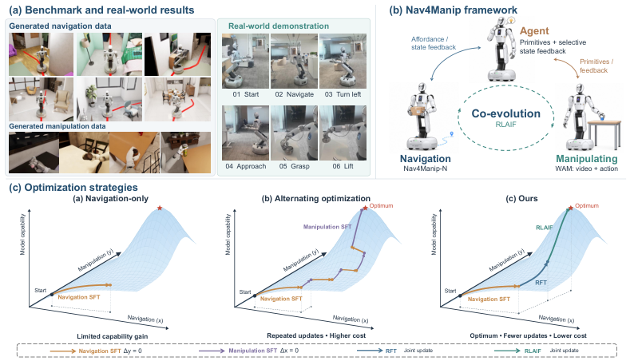

Nav4Manip
From Navigation to Dexterous Mobile Manipulation through Co-Evolution
* Equal contribution
A co-evolution system that uses manipulation feedback to improve navigation, coupling long-horizon navigation with a world-action model for dexterous manipulation.
@misc{feng2026nav4manip,
title={Nav4Manip: From Navigation to Dexterous Mobile Manipulation through Co-Evolution},
author={Yusen Feng and Zixi Kang and Zhijun Yin and Changxiao Liu and Tianhong Gao and Jiazhao Zhang and Jiahang Liu and Libin Liu and Zhizheng Zhang and He Wang},
year={2026},
eprint={2611.34655},
archivePrefix={arXiv},
primaryClass={cs.RO},
url={https://arxiv.org/abs/2611.34655}
}